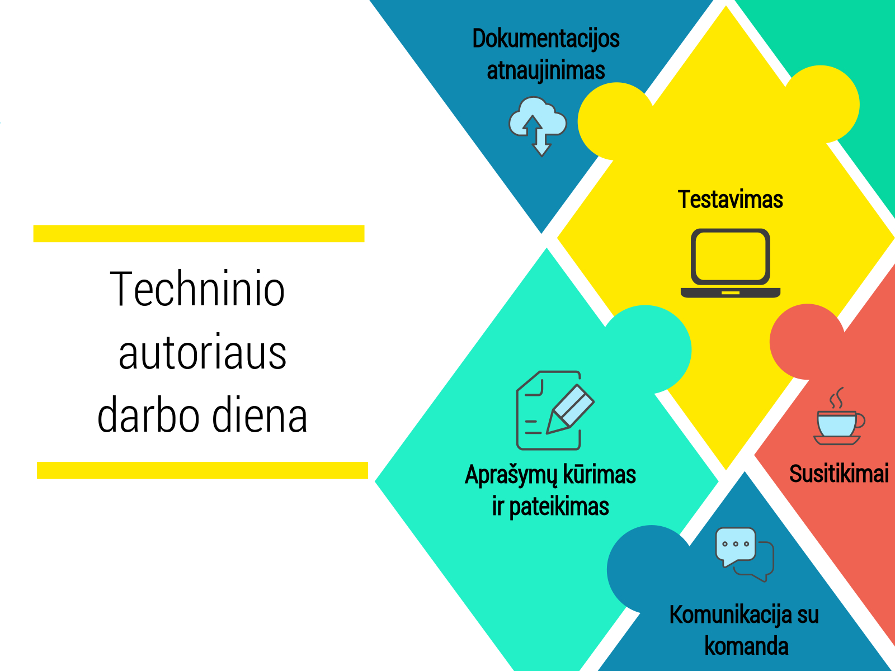

Techninis autorius

Techninis autorius yra atsakingas už produkto techninės ir programinės įrangos dokumentaciją. Techninis autorius nuolat palaiko ryšį su komanda tam, kad surinktų informaciją apie produktą ir pasirūpina, kad dokumentacija būtų suprantama kiekvienam. Dokumentacija gali būti pateikiama įvairiais formatais, tai gali būti svetainė, žinynas, katalogas, programėlė ir t.t. Dokumentacijos rolė kompanijoje yra itin svarbi, nes būtent ji formuoja geros kompanijos įvaizdį.
Kokios savybės gali būti naudingos techniniam autoriui?
- Geri rašymo įgūdžiai. Techninis autorius pasižymi gera stilistika ir gramatika. Taip pat specialistas geba, net ir techniškai sudėtingą informaciją paversti kiekvienam suprantama kalba.
-
Techninės žinios. Specialistas geba dirbti ne tik su turinio valdymo programomis, bet ir supranta techninius aspektus. Techniniam autoriui praverčia žinoti HTML ir CSS.
- Bendradarbiavimas ir bendravimo įgūdžiai. Techniniam autoriui tenka bendradarbiauti su skirtingomis komandomis, jog suprastų jų veiklos ar naudojamo produkto savybes ir jas aiškiai ir suprantamai pateiktų vartotojams.
Kokių techninių žinių gali prireikti techniniam autoriui?
-
MADCAP - programa skirta turiniui rašyti ir valdyt.
-
„Target Process“ / „Jira“ - platforma skirta bendravimui su komanda, užduočių paskirstymui, proceso sekimui.
-
„Xlm“ editor - bendros paskirties duomenų struktūros bei turinio aprašomosios kalbos redagavimo programa.
-
„Photoshop“ - paveikslėlių kūrimo ir redagavimo programa.
-
„Camtasia“ - programa skirta parodomiesiems video.
-
„Gmail“ ir „Slack“ - komunikacijos įrankiai.